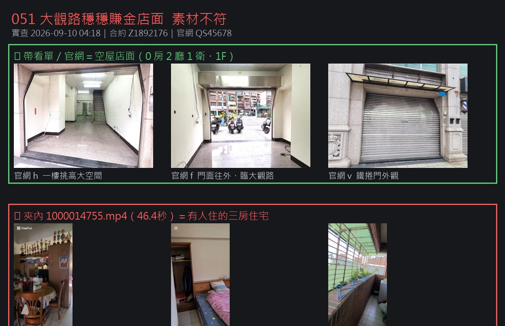
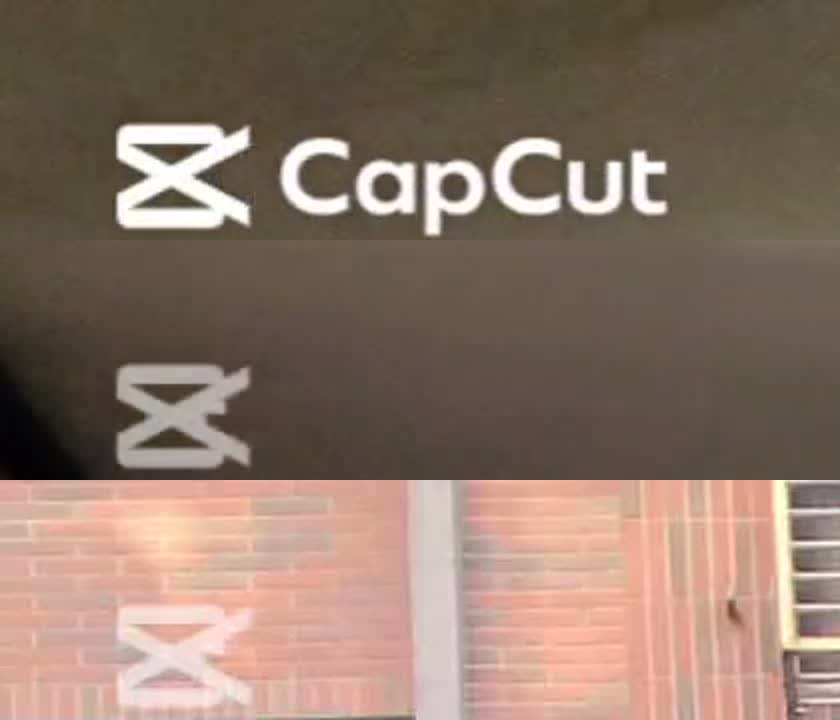
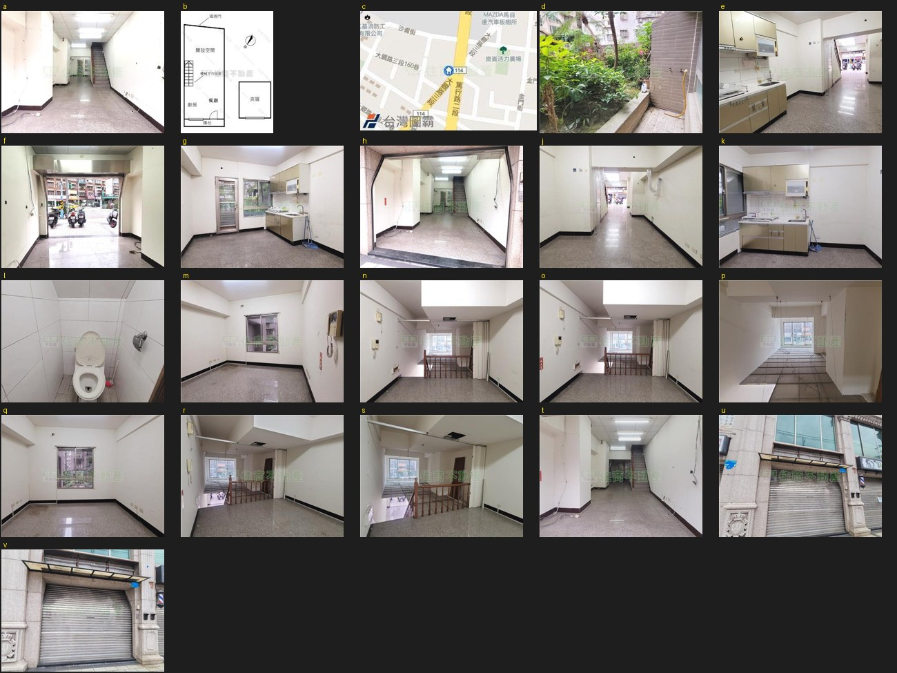
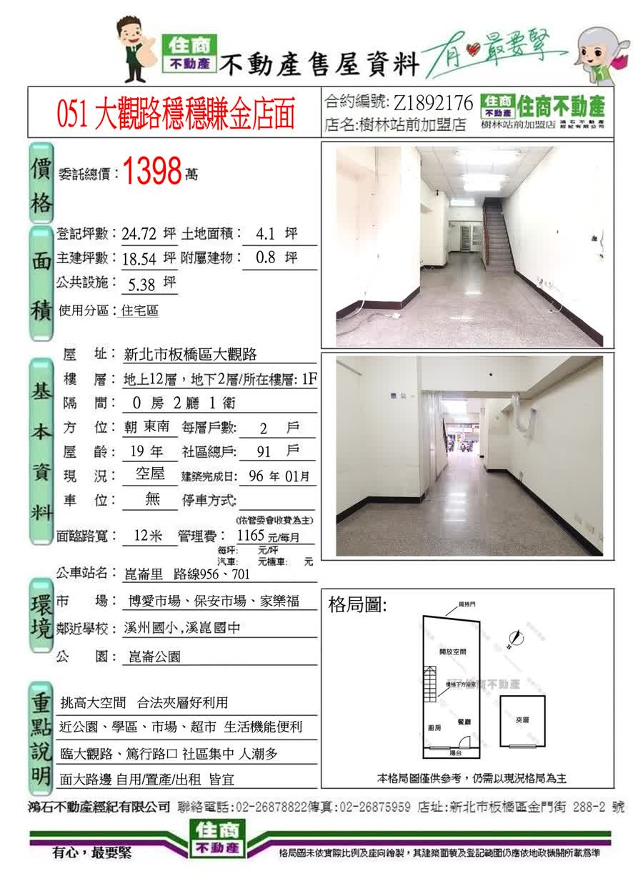
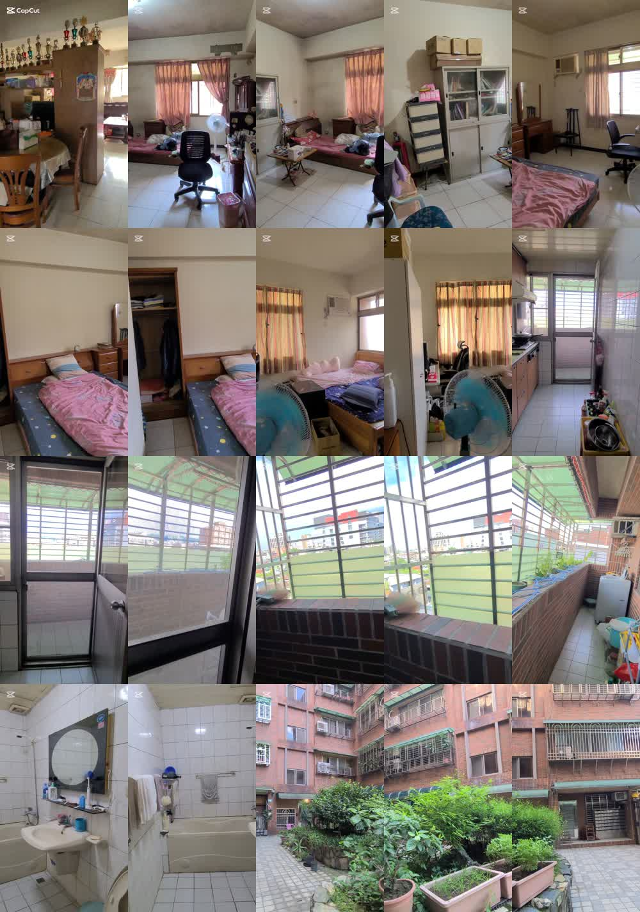

051 大觀路穩穩賺金店面
素材實查
2026-09-10 04:18 實查｜合約 Z1892176｜官網 QS45678｜任務 50-0910-01
🔴 卡在這三件事
- 夾裡那支 46 秒影片，不是這個案子。
影片是有人住的三房住宅，還有頂樓鐵皮露台跟紅磚公寓中庭。
帶看單寫的是空屋、0 房 2 廳 1 衛、一樓店面。對不起來。
- 那支片整支都有 CapCut 浮水印。
第 1 秒、23 秒、45 秒都看得到，在左上角。母帶夾裡查不到這支，不是我們自己剪的。
- 051 這案沒有任何動態實拍，也沒有 500 公尺生活圈的畫面。
手上只有官網 21 張＋你夾裡 6 張室內＋帶看單。官網那 21 張只有 383×287 的小圖，還印著住商浮水印，放大到手機直式會糊掉。

上排＝官網／帶看單的空屋店面 下排＝夾裡那支影片的畫面

同一支片的第 1 秒／23 秒／45 秒，左上角浮水印
🟢 沒被卡住，已經做完的
- 官網比對過了，全部對得上。
| 開價 | 1398 萬（官網原價 1588，已降 11.96%） |
| 登記坪數 | 24.72 坪 |
| 主建／附屬 | 18.54 ／ 0.8 坪 |
| 土地 | 4.1 坪 |
| 樓層 | 1 樓，共 12 層 |
| 格局 | 0 房 2 廳 1 衛 |
| 屋齡／車位 | 19.7 年 ／ 無 |
| 物件編號 | QS45678 |
- 官網 21 張照片已經抓下來，存進案子的夾裡（官網照片_QS45678）。有鐵捲門外觀 2 張、門面 1 張、格局圖、地圖。
- 技能檔那條先前說壞掉的，其實已經好了。單子上寫「12 項不合格」是舊的，別的視窗已經修完並升到新版，我沒有再去動它。
- 看板已登記、已存檔。

官網 21 張全貌（u、v 是鐵捲門外觀，f 是門面，c 是地圖）
🟡 等你一句話
051 這案接下來走哪條？
A 走簡報頁／貼文（建議）現有素材就夠，不用補拍，今天就能出。
B 出開箱影片你要補拍室內動線，還有 500 公尺內的生活圈畫面。
C 那支住宅影片才是主線告訴我是哪一案，我接手處理浮水印跟歸位。
順便兩件小的：
① 案名官網寫「穩穩賺錢金店面」，帶看單寫「穩穩賺金店面」，差一個錢字，對外用哪個？
② 那支住宅影片是不是你自己剪的？

051 帶看單

夾裡那支 46 秒影片，抽 20 格全貌
開價不等於成交價 實際成交價以雙方簽約為準。
經紀業 鴻石不動產經紀有限公司｜住商不動產樹林站前加盟店
經紀人 林秀嫻 (96)北縣字第001399號
營業員 何志宏 (114)年登字第495065號